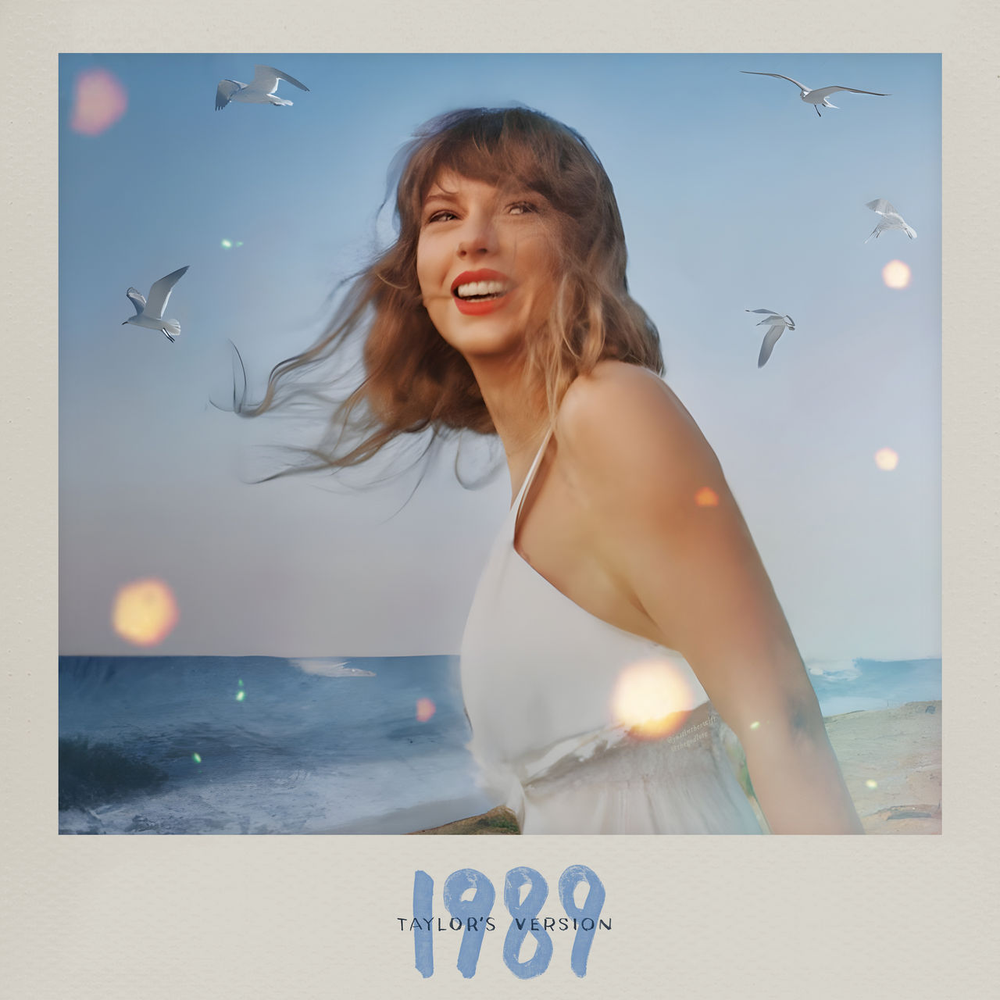
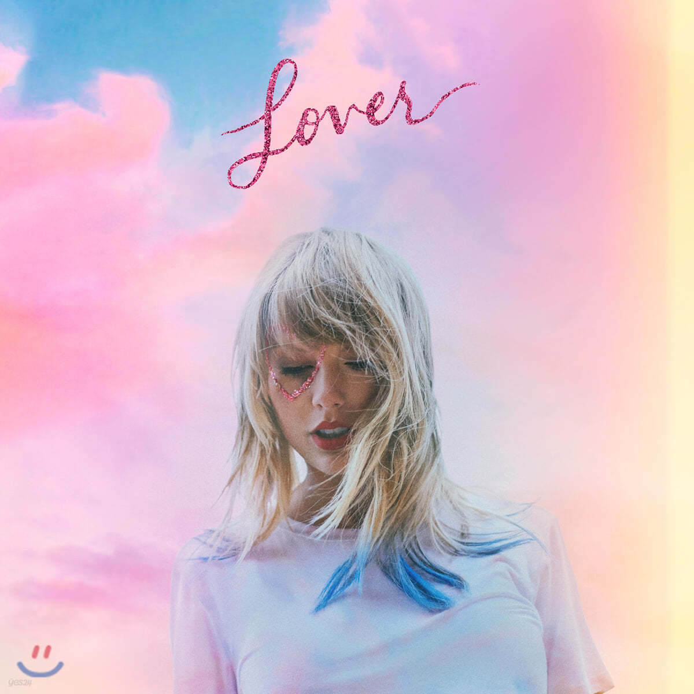
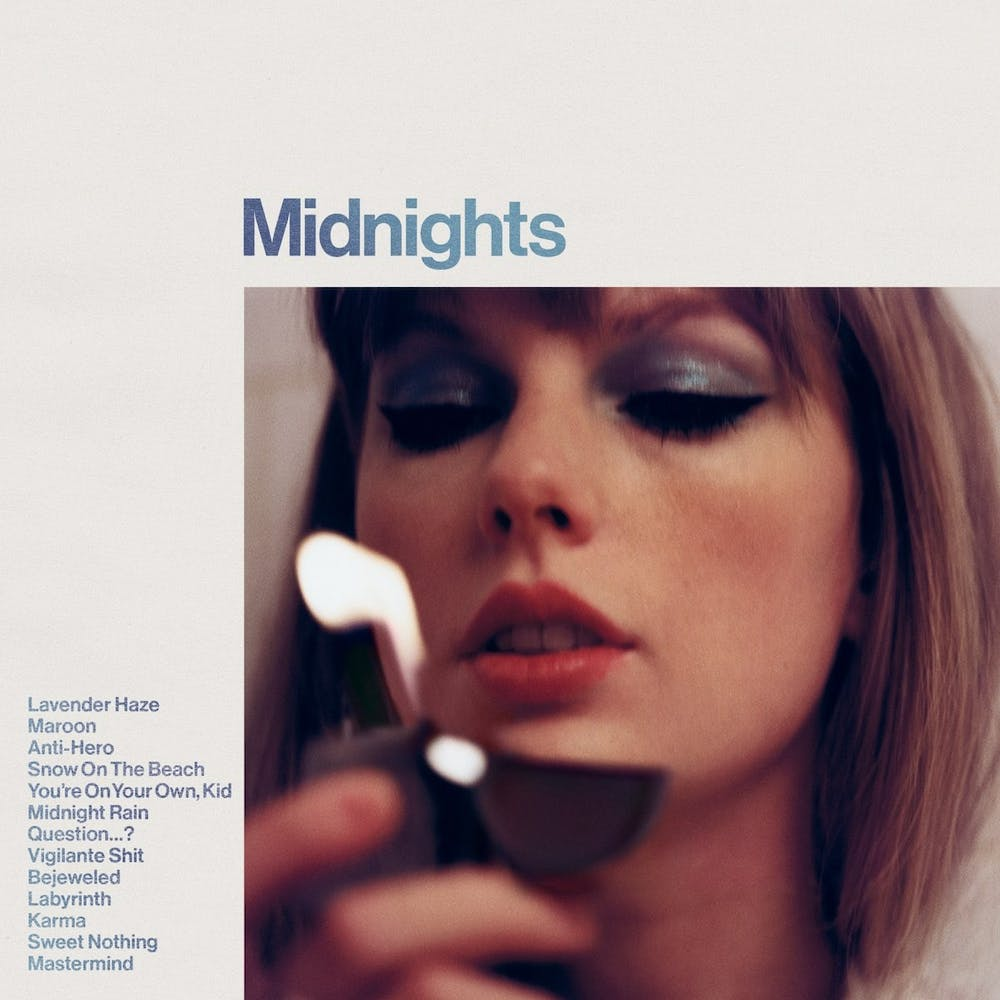

Taylor Swift
She is my favorite singer. I've liked her since the 'reputation' album came out. She is very good at composing and writing lyrics and singing well, but the reason I like her the most is because of her mind that she takes care of her fans first.
Taylor Swift
She is an American singer-songwriter and pop singer. To date, 10 albums have been released. She received numerous song-related awards. She was selected as the 2023 Person of the Year by The Times. Taylor Swift is currently on a world tour.

Taylor Swift's Album table
| album name | Release date | genre | note |
|---|---|---|---|
| Taylor Swift | 2006.10.24 | Contury | her first album |
| fearless | 2008.11.11 | Contury pop | Grammy Award for Album of the Year |
| speak now | 2010.10.25 | Contury, Pop, Pop rock | All songs were written and composed by her. |
| red | 2012.10.22 | Contury, Pop, Pop rock | transitional period of genre |
| 1989 | 2014.10.27 | Synthpop | Legendary success and second Album of the Year award |
| reputation | 2017.11.10 | Synthpop, R&B | Comeback after 3 year hiatus |
| lover | 2019.08.23 | Pop | A different vibe from the previous album |
| forklore | 2020.07.24 | Chamber pop, indie folk, alternative rock, electro folk | Third Grammy Award for Album of the Year, released during COVID-19 |
| evermore | 2020.12.11 | Alternative rock, indie folk, chamber pop | sister album by forklore |
| midnight | 2022.10.21 | Synthpop, alternative | Another peak of her life |
Taylor Swift's album covers





